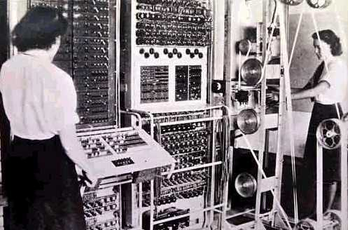
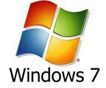
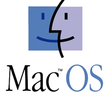
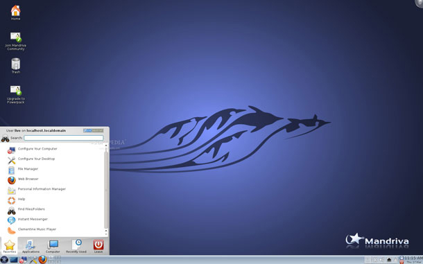

Actividad
Sistema operativo
Programa o conjunto de programas que efectúan la gestión de los procesos básicos de un sistema informático, permitiendo y posibilitando la normal ejecución del resto de las aplicaciones.
Sistema operativo
Programa o conjunto de programas que efectúan la gestión de los procesos básicos de un sistema informático, permitiendo y posibilitando la normal ejecución del resto de las aplicaciones.
Los primeros ordenadores carecían de sistema operativo como tal. Esto por un lado obligaba a costosos procesos de introducción de los programas y por otro soponía una limitación en el manejo a la mayoría de los potenciales usuarios por carecer de los conocimientos necesarios.
Estas aplicaciones surgieron pues como consecuencia de la necesidad de facilitar el trabajo con las computadoras y constituyeron el primer paso hacia su popularización.
|  |
| Imagen 32. cocunstaying. Copyright |
Las funciones más importantes que ha de permitir realizar cualquier sistema operativo son:
Los distintos sistemas operativos se clasifican atendiendo a diferentes criterios. Las dos clasificaciones más importantes son:
Principales sistemas operativos
|  |
| Imagen 32. microsoft. Copyright |
Sistema operativo de la empresa Microsoft. Es el más utilizado en la actualidad por los usuarios de ordenadores personales a nivel mundial. Consiste en un entorno multitarea dotado de una interfaz gráfica de usuario basada en menús desplegables, ventanas en pantalla y un dispositivo señalador controlado por el ratón.
La primera versión de este sistema se publicó en noviembre de 1985, sin embargo su popularidad no llegá hasta 1990 cuando la versión 3.0 consiguió vender dos millones de copias en sus seis primeros meses de vida. Posteriores versiones del Windows 3.1, 3.11, 95, 98 y XP se han ido sucediendo en el tiempo, consolidando la posición dominante de esta empresa dentro del mundo del mercado de software propietario (código cerrado y pago por la licencia de uso).
Es llamativo el escaso éxito de la versión Vista, destinada a reemplazar a la versión XP, entre otros problemas, la cantidad de recursos que este sistema operativo exigía a la máquina hicieron que su vida comercial fuera muy corta y que fuera reemplazado por la versión Windows 7, basada en la anterior pero solventado la mayor parte de sus problemas. Junto estas versiones Microsoft ha ido publicando versiones destinadas a trabajar con servidores de red y bases de datos, siendo la última versión disponible la Windows Server 2008.
| Imagen 33. unix. Copyright |
Sistema operativo multiusuario y multitarea especialmente indicado para redes en las que trabajan varias personas con los mismos datos. Esta escrito en lenguaje C lo que le proporciona fiabilidad y robustez, características muy adecuadas para los grandes servidores de información. Desde su aparición en 1969, otros sistemas operativos han ido adoptando características de UNIX a su propio desarrollo.
| Imagen 34. ubuntu. Creative Commons |
Es un sistema operativo, compatible Unix. GNU/LINUX, a diferencia del resto de sistema operativos más populares, es un sistema libre. Esto queire decir dos cosas, la primera es que se trata de un sistema gratuito. No tenemos que pagar ningún tipo de licencia a ninguna casa desarrolladora por el uso del mismo. La segunda, es que el sistema está elaborado con código abierto, cualquier persona puede acceder al código el sistema y modificarlo en función de sus necesidades.
El sistema está formado por un núcleo (kernel) más un gran número de programas/librerías que hacen posible su utilización (proyecto GNU). Tomando como base el Kernel de Linux y las aplicaciones GNU se han desarrollado innumerables distribuciones de Linux: Mandrake, Debian, Red Hat, Suse, Ubuntu, Mandriva... Cada una tiene sus características propias aunque todas comparten un núcleo de funcionamiento común.
|  |
| Imagen 35. apple. Copyright |
Es el sistema operativo desarrollado, a partir de UNIX, por la empresa Apple para los equipos Macintosh. Existen dos versiones, la destinada a los equipos de sobremesa y el dirigido a los servidores, el denominado Mac Os X Server.
Este sistema operativo fue el pionero en la interfaz
gráfica a base de ventanas que, posteriormente, imitarían otros
sistemas como Windows o Linux. Destaca por su robustez, la fiabilidad
y, sobre todo, la facilidad de uso, aunque está limitado a los
ordenadores Apple y su alto precio.
Pese a la gran cantidad de sistemas operativos disponibles, lainterfaz o presentación gráfica de los principales sistemas
operativos dirigidos al usuario doméstico son muy similares entre sí.
Todos ellos se basan en un escritorio (personalizable mediante colores, diseños y
temas) sobre el que se disponen una barra de tareas y una serie de
iconos. Tanto desde la barra de tareas como desde los iconos, se accede
a los distintos programas y aplicaciones que se muestran mediante
ventanas de tamaño y disposición variable. Al ser sistemas operativos multitarea, en la barra de tareas se
muestran botones con las aplicaciones abiertas en cada momento. El paso
de una a otra se realiza mediante un simple clic en el botón
correspondiente.
|  |
| Imagen 36. multimediaboom. Creative Commons |
Una de las barreras que Linux ha encontrado desde sus inicios es la presunta dificultad que suponía su instalación y uso para un usuario poco experimentado. Esta imagen, cierta en sus inicios y fomentada por los intereses de las empresas de software de pago, ha dejado de ser cierto con la aparición de numerosas distribuciones como Devian, Mandriva o Ubuntu. El siguiente video te muestra el proceso de instalación en un PC doméstico de la distribución ubuntu así como el uso de una aplicación de procesador de texto.
|
Video 6. http://www.youtube.com/v/CSEUbhCYN8U youtube. Copyright |
El proyecto GNU y el núcleo Linux
En los inicios de la informática todo el software era libre. Los ordenadores eran máquinas pesadas y caras que sólo se podían encontrar en las Universidades y centros de investigación. Los programadores mantenían su código abierto y colaboraban entre sí a través de Internet, construida toda ella con software libre. En aquellos años el sistema de referencia era UNIX propiedad de ATT, cuyo código era distribuido libremente a empresas y universidades por un precio simbólico. ATT no podía explotar comercialmente UNIX™ debido a su calidad de monopolio.
Pero muy pronto este sistema de cooperación se vería amenazado. En el 1984 la ley antimonopolio estadounidense obligó a la compañía a dividirse. A partir de ese momento la restricción impuesta dejo de ser efectiva, UNIX comenzó a comercializarse y se cerró su código.
Al mismo tiempo un nuevo mercado comenzaba a tomar forma: la informática doméstica. Los ordenadores se abarataron, se hicieron más ligeros y comenzaron a invadir los hogares. El software comenzó a ser comercializado y las empresas obligaron a sus programadores a firmar acuerdos de no revelación, por los que se comprometían a cerrar el código, y los programas comenzaron a venderse sin facilitar su código fuente.
Esto generó una reacción de rechazo que se hizo patente cuando Richard Matthew Stallman en 1984 decidió iniciar el proyecto de crear un sistema operativo similar a UNIX™, pero con una licencia que permitiese el acceso al código fuente, además de la libre distribución y copia. Para ello hubo de abandonar el laboratorio de Inteligencia Artificial del MIT (Instituto Tecnológico de Massachusetts) en el que había trabajado hasta entonces. Para proteger al nuevo sistema se creó la licencia GNU/GPL (Licencia Pública General GNU) y el copyleft (opuesto al copyright), que garantiza la libertad de uso, copia y modificación, y obliga a distribuir el código fuente junto con los binarios.
En 1990 el sistema GNU estaba casi completo pero faltaba un componente esencial: el núcleo (kernel). El primer kernel libre y operativo no llegó en 1991 de la mano de Linus Torvalds un estudiante finlandés de 21 años desarrolló un núcleo compatible con Unix y lo denominó Linux. Todo comenzó como un proyecto fin de carrera: se trataba de programar un núcleo para sistema operativo inspirado en Minix.
"Estoy haciendo un sistema operativo libre (es sólo un hobby, no será grande ni profesional como GNU) pero funciona en 386(486) AT clones, lo he estado cocinando desde abril y está quedando listo. Quisiera alguna retroalimentación de las cosas que a ustedes les gustan y no les gustan de MINIX, ..."
Este sencillo mensaje de Torvalds en un grupo de noticias motivó una avalancha de colaboradores y los frutos no se harían esperar. En enero de 1992 se publicó la versión 0.02, y poco tiempo después, en marzo de 1994 se liberó la versión 1.0.0, ya lista para sistemas en producción. A partir de esta versión al combinar Linux con el sistema no completo GNU resultó un sistema operativo libre completo cuyo nombre correcto es GNU/Linux, y no simplemente Linux por más que esta denominación abreviada se haya popularizado. De esta manera se reconoce explícitamente que el sistema no es sólo el núcleo, sino muchas otra piezas de software que se escribieron con anterioridad sin las que hubiera sido imposible tener algo funcional e incluso construirlo.